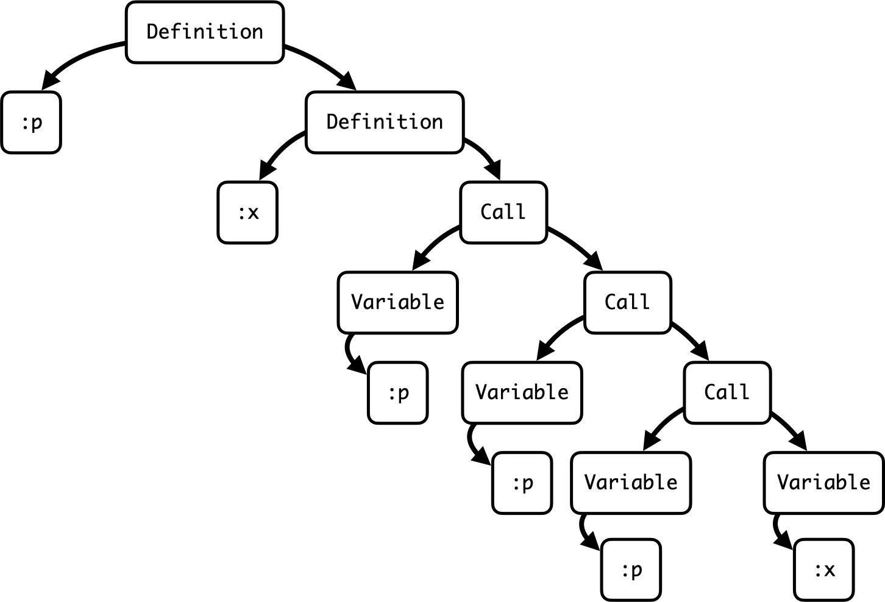
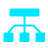

原理第一层：代码库静态图谱构建


通过静态分析将海量、非结构化的代码文本，转化为机器可高效理解的结构化图谱。这种“预加工”策略，从源头减少了大模型需要处理的冗余信息，是实现高效代码理解的基础。
核心逻辑：从“文本投喂”到“结构提取”

01 智能扫描与降噪
自动过滤node_modules、dist等无关目录，仅聚焦核心业务代码，剔除干扰。

02 全域符号关系解析
深度识别类、函数、接口及变量定义，构建完整的代码实体与调用依赖网络。

03 数据流全链路追踪
解析变量赋值与传递的完整路径，让模型真正理解代码的动态逻辑与数据流向。
04 历史上下文注入
关联Git提交记录与Issue，为代码赋予“设计初衷”与“演进背景”的维度。
最终产出：生成结构化JSON图谱，存入本地.omx目录，作为所有智能Agent的共享知识库。这一机制将模型的理解效率提升数十倍，从根本上解决了长文本处理的上下文窗口限制。